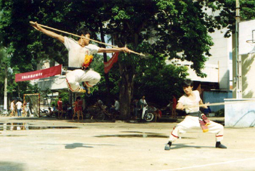

|
|
Nguồn Gốc Võ-Thuật Cổ-Truyền Việt-Nam
|
 |
Võ-Thuật Cổ-Truyền Việt-Nam
Di sản truyền thống thượng võ, bất khuất
của dân tộc Việt Nam. |
Con người nguyên thủy từ thời Cổ
Ðại, sinh sống dựa trên thu lượm, nhặt hái các thức ăn có sẳn ở thiên nhiên và
săn bắt thú rừng là chủ yếu. Những động tác, cách thức rình rập, rượt đuổi
đánh giết dần trở thành quen thuộc hàng ngày.
Tiếp đến là những trường hợp phải xữ trí trong quan hệ giữa
người và vật trong săn bắn, giữa người và người để tự vệ, để chiến
đấu gìn giử các vật thực do thành quả lao động, hoặc quyền sở hữu miếng đất,
khoảnh rừng đang sinh sống.
Tất cả các động tác, các cách thế đó, từ đơn giản đến
phức tạp, đã là cội nguồn của các đòn thế, bài bản của các trường phái
võ thuật trên thế giới.
Qua quá trình gian khổ dựng nước và giử nước, từ thời khai
nguyên dân tộc và kháng chiến chống quân xâm lược, giử yên bờ cõi, bảo vệ sự
toàn vẹn lảnh thổ.
Người dân Việt trưởng thành từ vùng đất châu thổ sông Hồng đã tự hình
thành, phát triển và đúc kết được những kinh nghiệm quý báu về kỷ thuật chiến
đấu cá nhân và những cách thức, sách lược trong vận dụng và huy động lực
lượng quân sự vào cuộc chiến đấu tập thể "chiến tranh".
Kỷ thuật chiến đấu cá nhân, cơ sở cho một đội quân tự vệ
quốc gia đó chính là nguồn gốc sâu xa,đích thực của một nền võ học cổ truyền
phong phú và đa dạng của đất nước Việt Nam anh hùng, bất khuất. |
| Ðặc thù của võ học cổ truyền Việt
Nam |
Nước Việt là một vùng đất hẹp,
người thưa,ở sát cạnh một quốc gia phong kiến phương Bắc to lớn, luôn chực chờ cơ
hội để thôn tính và đồng hóa thành một châu huyện của họ.
Ý thức quốc gia độc lập, tự chủ và truyền thống dân tộc
bất khuất, tinh thần thượng võ cao độ đã hình thành một cách sâu sắc trong
huyết thống của người dân đất Việt anh hùng, thể hiện qua những cuộc chiến đấu
một mất một còn với kẻ ngoại xâm : |
" Muốn thoát ách nô lệ lầm than cơ cực, nhục nhã
thì
phải chiến thắng kẻ thù xâm lược " |
Trước những đòi hỏi luôn luôn cấp
bách và thiết thực cho vận mệnh đất nước như thế, hơn ai hết, người Việt luôn
tìm tòi học hỏi và sáng tạo những cách đánh riêng biệt, độc đáo,phù hợp
với đặc điễm của đất nước và con người với trình độ phát triển kỷ
thuật, sinh hoạt xã hội và kinh tế nhất định. Những phương cách chiến đấu đủ
sức đương đầu, ngăn chận bước chân xâm lược tàn ác, bạo ngược của
ngoại bang.
Vó ngựa hung hãn của đoàn kỵ binh Mông cổ ngạo nghễ giày xéo một cách
man rợ bao lãnh thổ từ Âu sang Á, lập nên một đế quốc rộng lớn, menh mông từ bờ
biển Hắc hải đến bờ biển Thái bình Dương, nhưng rồi đã phải quỵ ngã ở
dãy đất nhỏ bé nầy.
Câu chuyện tưởng chừng như hoang đường, nhưng đó đã là sự
thật!!
Và sự thực đó đã được kiên quyết khẳng định khi đoàn quân
bách chiến bách thắng Mông Cổ quay lại tiến công phục thù lần thứ hai và lần thứ ba,
mỗi lần quay lại là một lần lớn hơn, mạnh hơn, nhưng cuối cùng đã phải nuốt hận
và bỏ chạy lấy thân một cách nhục nhã, thãm thương.
Người dân đất Việt anh hùng đã dõng dạt nói lên lời quyết chiến,
quyết thắng, chấp nhận mọi hy sinh, mất mác. Những chiến cônghiển hách, lẫy lừng đó
đã là của toàn dân.
Với ý chí sắt thép " Sát Thát " và với những cách đánh dũng mãnh, mưu trí,
đoàn chân đất đã ngoan cường chiến đấu và giành lấy những chiến thắng oanh
liệt, viết lên những trang sử vẽ vang trong lịch sử hơn 4 ngàn năm lập quốc kiêu hùng của
dân tộc Việt Nam.
Từ một thực tế chiến đấu vô cùng nghiệt ngã đó, những cách
đánh sáng tạo, tài tình, độc đáo của dân Việt đã được khẳng định
là đúng đắn, thích hợp và có hiệu quả. |
|
Tinh-Hoa của Võ-Thuật Cổ-Truyền
Việt-Nam |
|
1. Võ thuật cổ truyền Việt Nam là VÕ TRẬN
|
|
Võ thuật cổ truyền Việt Nam được gọi
là "Võ Trận" với ý nghĩa là võ thuật để dùng trong chiến trận để chống giặc
giử nước. "Võ Trận" Việt Nam thể hiện đầy sinh
động trong tính cách quyết chiến, quyết thắng : đó là một lối đánh tiêu diệt, dứt
khoát một mất một còn, không khoan nhượng của cả một dân tộc để giử yên bờ
cõi, bảo vệ biên cương Tổ quốc. |
2. Võ thuật cổ truyền Việt Nam là một thể hiện cho ý chí sắt đá,
xã thân, vì nước quên mình của dân quân đất Việt. |
|
Cuộc kháng chiến hào hùng của dân quân
nước Việt từ ngàn xưa trước một đối phương phương Bắc rộng lớn tựa như
một hình tượng đầy sinh động sau đây: |
| " Nực cười châu chấu đá xe . . . " |
| Thế nhưng, những con người ở vùng đất
châu thổ sông Hồng nhỏ bé đã chứng minh một sự thực oanh liệt, bao lần đậm nét
trong những trang sử hào hùng của dân tộc : |
| " Tưởng rằng chấu ngã, ai ngờ xe nghiêng . . . ." |
| Hiện thực đó chỉ có thể có
được với một tinh thần thượng võ cao độ, đầy sức thuyết phục: |
Lấy đại nghĩa để thắng hung tàn,
Ðem chí nhân để thay cường bạo.
(Bình Ngô Ðại Cáo - Nguyễn Trãi.) |
| Và một truyền thống bất khuất, sắt đá: |
Tôi muốn cỡi cơn gió mạnh, đạp luồng sóng dữ,
chém cá kình
ở biển khơi, đánh đuổi quân Ngô giành lại giang sơn,
cởi ách nô lệ, chứ tôi không chịu khom lưng làm tỳ thiếp người
(Lời Bà Triệu Trinh Nương.) |
| Chấp nhận thử thách, đương đầu với
gian khổ, mất mác đau thương. Người dân Việt đã chấp nhận hy sinh tất cả để
giành lấy quyền sống tự do, độc lập cho đất nước: |
Ta thà làm quỷ nước Nam,
Còn hơn làm Vương đất Bắc.
(lời của Tướng Trần Bình Trọng trong buổi tiệc đầu người,
nơi trại giặc.) |
| Tất cả là thể hiện một đặc thù
nổi bật nhất về ý chí quên mình, xã thân cho đại nghĩa dân tộc của Võ thuật
Cổ truyền Việt Nam hình thànn trong quá trình dựng nước và giử nước. |
3. Võ thuật cổ truyền Việt Nam là một thể hiện thực sự cho tính
Nhu chế Cương, Ðoản chế Trường. |
Trong thực tế chiến đấu, làm sao có thể
lấy ít đánh nhiều, lấy yếu đánh mạnh?
Người dân Việt, lấy cá nhân mà xét, lấy tập
thể mà tính, là yếu kém hơn nhiều so với các thế lực phương Bắc. Nếu chỉ thuần
dựa trên ý chí và tinh thần mà không có được một sách lược đối phó thích
hợp, một phương cách đối trị hữu hiệu, làm sao có thể ngăn cản được các
âm mưu xâm lược thâm độc của giặc ngoại xâm ?
Dân tộc Việt Nam đã có được những kinh nghiệm quý báu qua thực tiển
chiến đấu giành lấy quyền sống còn, cởi bỏ xiềng xích nô lệ ngoại bang với những
thể hiện sáng tạo trong võ thuật cổ truyền, một trang bị không thể không có cho đoàn
dân quân nước Việt, áp dụng linh động và triệt để 2 nguyên lý căn bản: |
|
A. Nhu chế Cương |
| Vì yếu hơn nên không thể dùng lực đối lực. Dân quân nước Việt
luônluôn phải đối phó với một lực lượng quân sự phương Bắc đông đảo
gấp bội, về chiến thuật cũng như chiến lược, vì ít hơn nên ta phải làm sao nhanh chóng
giải quyết chiến trường, tiết kiệm sức lực, bằng cách luồn lách, tránh né, mềm dão,
hư thực. Trong công có thủ, trong thủ đã tiềm ẩn thế tấn công vào nơi địch sơ
hở, bỏ trống. |
| B. Đoản chế Trường |
Áp dụng cho cá nhân người chiến sỉ và cho
cả tập thể lực lượng kháng chiến, chống giặc giử nước, người dân nước
Việt luôn xử dụng những chiến thuật thần tốc, chớp nhoáng, không mất thì giờ và công
sức để triệt phá sức tấn công của đối phương mà chỉ cần nhanh chóng tránh né,
tiếp cận, khám phá những sơ hở nhất định của chúng để dứt khoát, dũng mãnh
tấn công tiêu diệt ngay chính tiềm năng của sức tấn công ấy: đó là ý nghĩa của tinh
thần dùng Đoản chế Trường .
Võ thuật cổ truyền Việt Nam là những tinh hoa kế thừa bao kinh nghiệm xương
máu và tim óc của tổ tiên bao đời : đó là một sự thực hiển nhiên không thể
phủ nhận được và đừng bao giờ khinh suất coi thường.
Cùng với quá trình giao lưu văn hóa, kinh tế với nước ngoài. Người dân
Việt cũng luôn tìm hiểu và học hỏi những tinh hoa cốt lõi nhất của họ để có
được những cách đánh năng động, sáng tạo và có hiệu quả nhất đối với
giặc xâm lược:
Học lấy cái hay của địch để có thể tìm ra được cách đánh
thích hợp nhất chế ngự được địch, đó là cách "Dỉ độc trị độc" hoặc còn có thể gọi là
: "Gậy ông đập lưng ông".
Dung hợp những điều hay của địch thành những kinh
nghiệm quý báu của mình, giúp cho kho tàng truyền thống đất Việt thêm phong phú, đa dạng,
nhưng vẩn luôn hài hòa thuần phác, đó là tinh thần của "Tri
kỷ tri bỉ" (biết người biết ta trăm trận trăm thắng).
Võ thuật cổ truyền Việt Nam luôn thắm đượm tinh thần cao đẹp
đó và đã thể hiện trọn vẹn bản sắc độc đáo, anh hùng của dân tộc.
Bề dầy lịch sử anh hùng hơn 4 ngàn năm dựng nước và giử nước cho phép chúng ta
hiểu được như vậy và khẳng định tầm vóc vô cùng to lớn đó. |
Xin đừng bao giờ nhầm lẩn, chớ khi nào
quên cội nguồn sâu xa đó
Hãy ra sức giử gìn và kế thừa sao cho xứng đáng. |
|